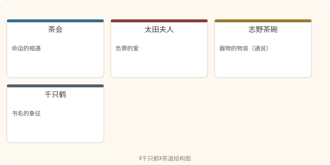

千只鹤
一、基本信息
| 作者 | 川端康成 |
|---|---|
| 成书/出版 | 1949—1952年连载（通说待核；作者页 B054/B027 口径：major_works 载'千鹤、山之音'） Kawabata Yasunari — Encyclopaedia Britannica（百科全书） |
| 国别/地区 | 日本 |
| 时代 | 现当代 · 20世纪 |
| 体裁 | 中篇小说 |
| 语言 | 日语 |

《千只鹤》茶道结构图（主题·结构图）
二、创作背景
作者页（B054/B027）：川端 major_works 载'千鹤、山之音'（B054/B027 作者页定位，详见 xueguo 条核对）。
题材（通说待核）：茶道中的爱欲纠缠——太田夫人与菊治、雪子与千只鹤茶碗。
三、内容脉络
茶会上的相遇：亡父情人与其女儿——负罪的美（通说待核）。
志野茶碗的流传（通说待核）。
四、主要人物表
| 人物 | 身份 | 说明 |
|---|---|---|
| 菊治 | 茶人之子 | （通说待核） |
| 太田夫人 | 亡父情人 | （通说待核） |
五、主题与艺术特点
- 茶道与情欲（通说）。
- 负罪的美学（通说待核）。
- 器物的物哀（通说待核）。
六、影响与评论
- 作者页：川端代表作谱系（B054/B027 作者页口径）。
Kawabata Yasunari — Encyclopaedia Britannica（百科全书） - 作者页：川端1968年诺奖（B054 作者级定位）。
Kawabata Yasunari — Encyclopaedia Britannica（百科全书）
七、阅读建议
难点
- 茶道术语。
- 情欲的含蓄书写。
- 《千只鹤》（人民文学出版社/上海译文版本，通说待核）。
- 日文原版（新潮文库）。
与《雪国》《山之音》合读。
八、待核实
- 连载年表（1949—1952《时事新报》等说）核对。
- 菊治/太田夫人人名核对。
- 志野茶碗意象待核。
本页主要来源
- Kawabata Yasunari — Encyclopaedia Britannica（百科全书）
- Snow Country (Yukiguni) — Encyclopaedia Britannica（百科全书）
川端康成的其他收录作品：雪国